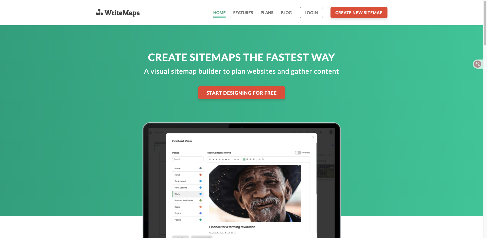

不只画结构，还给每个页面留一个位置，把该写的内容先收齐再动设计。
左侧页面详情面板，右侧每个节点带一张缩略图占位
WriteMaps 的视觉语言：每个节点上半是灰阶页面缩略占位、下半是页面名 + 路径 + 备注图标；选中节点用绿色描边和右下角对勾标记完成度。整体偏朴素 —— 白卡片、细边、浅绿连线，重心在左侧的内容面板而不是画布本身。

一个在线 sitemap 构建器，主打在设计和开发之前先把网站规划好：几秒画出可视化站点地图，给每个页面收集内容与备注，再分享或导出给团队和客户。
官网还有一个关于 sitemap 基础和信息架构的学习中心，说明它的用户里有相当一部分是第一次做网站规划的人。